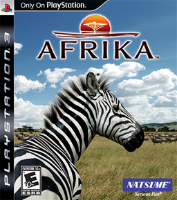

Afrika, known as Hakuna Matata in Hong Kong, South Korea, Taiwan and Southeast Asia, is a photography and safari simulation video game developed by Rhino Studios and published by Sony Computer Entertainment for the PlayStation 3. The game was first announced in a promotional video during the Sony press conference at E3 2006. Afrika has been referred to as being similar to the Nintendo 64 title Pokémon Snap. Natsume Inc. released the game in North America.
The reason this game is rare and pricey is because NTSC-USA copies had a very low print run.
Release: 2008